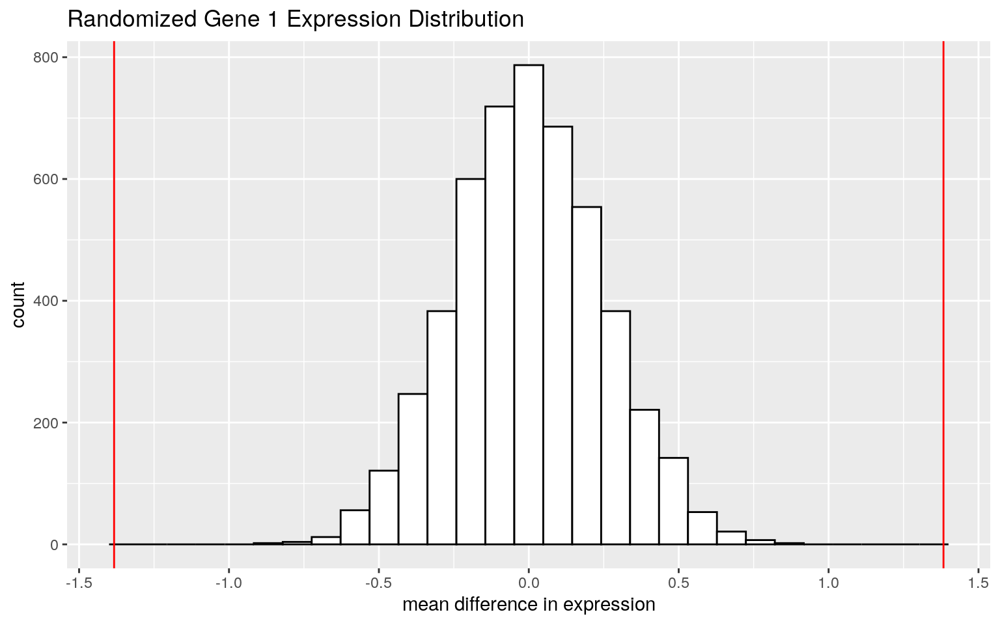
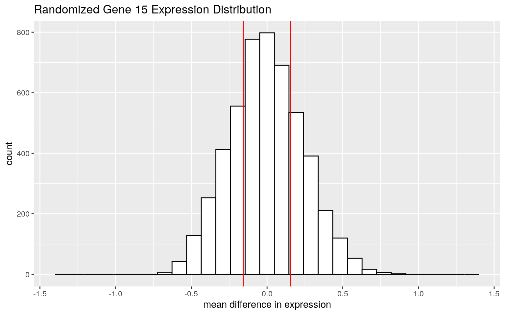
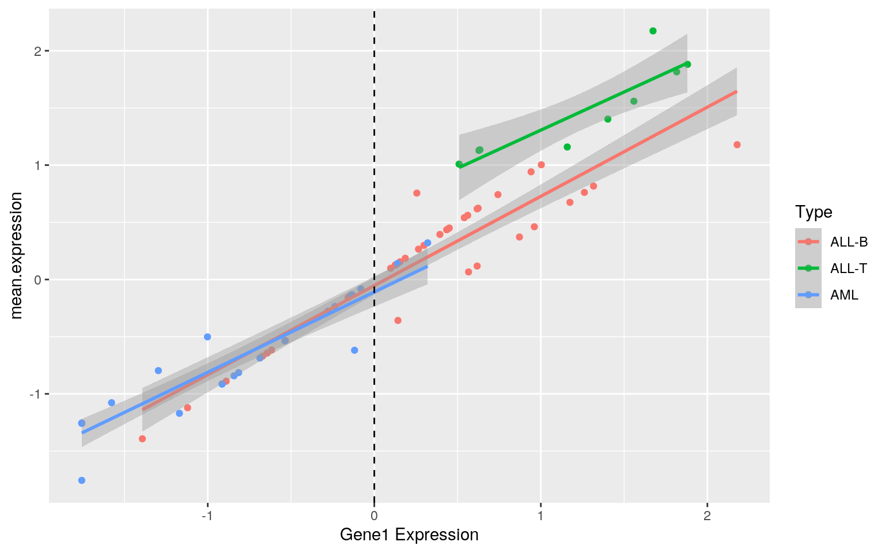
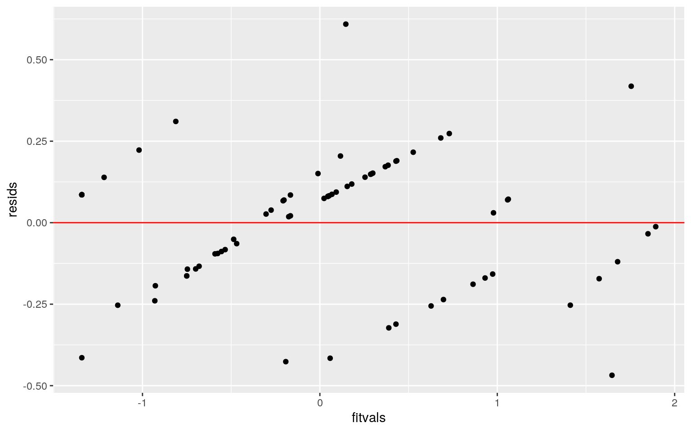
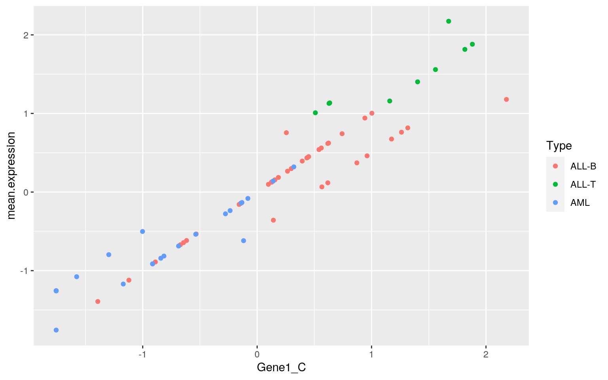
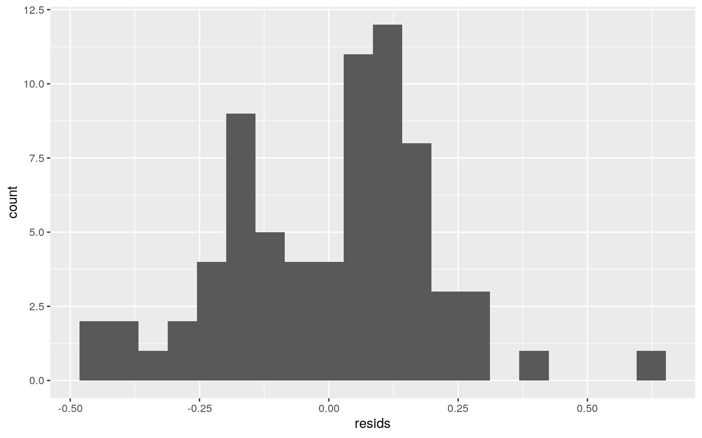
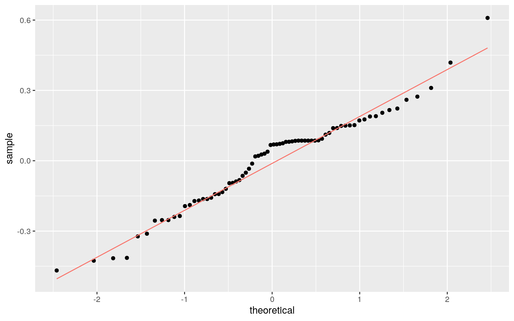
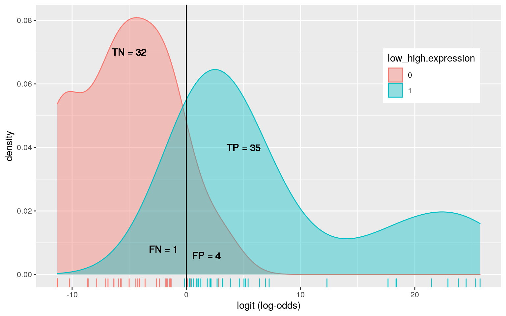
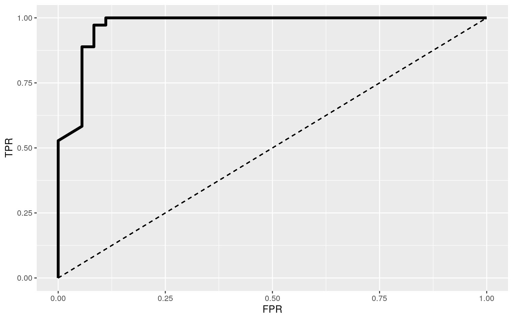

Acute leukemias are aggressive cancers that are characterized by infiltration of the bone marrow, blood, and other tissues by proliferative, clonal, and abnormally differentiated hematopoietic cells. Acute myeloid leukemia (AML) involves the rapid proliferation of poorly differentiated cells of the myeloid lineage, while acute lymphoblastic leukemia (ALL) involves cells of the lymphoid lineage with B (B-ALL) and T (T-ALL) cell subtypes. While frontline chemotherapies are effective in inducing remission across a spectrum of AML/ALL prognoses, the enormous genetic, epigenetic, and cellular heterogeneity of the diseases lead to frequent recurrence and mortality. Currently, leukemia diagnoses rely on various morphological, clinical, and molecular signatures that are prone to uncertainty and underrepresent disease heterogeneity. Characterizing genes that are aberrantly expressed in heterogeneous leukemic samples may therefore prove essential to designing effective and targeted therapies.
In this project, I will be analyzing microarray data that includes gene expression profiles from two types of acute leukemia, AML and ALL. The data contains 72 total observations for the top 40 differentially expressed genes from an oligonucleotide array containing 6817 genes. In the dataset, there are 38 cases of B-ALL, 25 cases of AML, and 9 cases of T-ALL. Variables are reported as Log2 expression (-1 to +1)
Source: Sandrine Dudoit, Jane Fridlyand & Terence P Speed (2002) Comparison of Discrimination Methods for the Classification of Tumors Using Gene Expression Data, Journal of the American Statistical Association, 97:457, 77-87, DOI: 10.1198/016214502753479248
# Import dataset
library(PPforest)
data("leukemia")
# Add variables
leukemia <- leukemia %>% arrange(Type) %>% mutate(Class = c(rep("ALL",47), rep("AML", 25)), Patient = seq(1,72,1)) #Broad AML/ALL distinction
leukemia <- leukemia %>% group_by(Patient) %>% mutate(mean.expression = mean(Gene1:Gene40)) #Mean expression across all genes
low_high <- leukemia %>% pull(mean.expression) %>% quantile(0.5)
leukemia <- leukemia %>% mutate(low_high.expression = ifelse(mean.expression > low_high, 1, 0)) #Categorize into high (1) or low (0) expression according to 50% quantile
leukemia <- subset(leukemia, select = c(43,42,1,44:45,2:41))leuk.manova <- manova(cbind(Gene1, Gene2, Gene3, Gene4, Gene5)~Type,data=leukemia)
summary(leuk.manova)## Df Pillai approx F num Df den Df Pr(>F)
## Type 2 1.3598 28.035 10 132 < 2.2e-16 ***
## Residuals 69
## ---
## Signif. codes: 0 '***' 0.001 '**' 0.01 '*' 0.05 '.' 0.1
' ' 1summary.aov(leuk.manova)## Response Gene1 :
## Df Sum Sq Mean Sq F value Pr(>F)
## Type 2 37.841 18.9204 39.371 3.912e-12 ***
## Residuals 69 33.159 0.4806
## ---
## Signif. codes: 0 '***' 0.001 '**' 0.01 '*' 0.05 '.' 0.1
' ' 1
##
## Response Gene2 :
## Df Sum Sq Mean Sq F value Pr(>F)
## Type 2 38.367 19.1837 40.563 2.252e-12 ***
## Residuals 69 32.633 0.4729
## ---
## Signif. codes: 0 '***' 0.001 '**' 0.01 '*' 0.05 '.' 0.1
' ' 1
##
## Response Gene3 :
## Df Sum Sq Mean Sq F value Pr(>F)
## Type 2 38.604 19.3019 41.111 1.752e-12 ***
## Residuals 69 32.396 0.4695
## ---
## Signif. codes: 0 '***' 0.001 '**' 0.01 '*' 0.05 '.' 0.1
' ' 1
##
## Response Gene4 :
## Df Sum Sq Mean Sq F value Pr(>F)
## Type 2 38.844 19.422 41.676 1.355e-12 ***
## Residuals 69 32.156 0.466
## ---
## Signif. codes: 0 '***' 0.001 '**' 0.01 '*' 0.05 '.' 0.1
' ' 1
##
## Response Gene5 :
## Df Sum Sq Mean Sq F value Pr(>F)
## Type 2 39.059 19.5294 42.188 1.076e-12 ***
## Residuals 69 31.941 0.4629
## ---
## Signif. codes: 0 '***' 0.001 '**' 0.01 '*' 0.05 '.' 0.1
' ' 1Gene1.t <- pairwise.t.test(leukemia$Gene1, leukemia$Type, p.adj="none")$p.val
Gene2.t <- pairwise.t.test(leukemia$Gene2, leukemia$Type, p.adj="none")$p.val
Gene3.t <- pairwise.t.test(leukemia$Gene3, leukemia$Type, p.adj="none")$p.val
Gene4.t <- pairwise.t.test(leukemia$Gene4, leukemia$Type, p.adj="none")$p.val
Gene5.t <- pairwise.t.test(leukemia$Gene5, leukemia$Type, p.adj="none")$p.val
Gene1.t; Gene2.t; Gene3.t; Gene4.t; Gene5.t## ALL-B ALL-T
## ALL-T 4.147296e-04 NA
## AML 4.167726e-09 2.050788e-11## ALL-B ALL-T
## ALL-T 3.505923e-01 NA
## AML 5.149718e-13 4.507712e-06## ALL-B ALL-T
## ALL-T 1.139674e-10 NA
## AML 2.329768e-09 0.009035001## ALL-B ALL-T
## ALL-T 2.046033e-09 NA
## AML 2.615272e-04 1.753472e-13## ALL-B ALL-T
## ALL-T 1.639427e-10 NA
## AML 6.665318e-10 0.01883718error_prob <- 1 - (0.95)^21
error_prob## [1] 0.6594384bonferroni <- 0.05/21
bonferroni## [1] 0.002380952Gene1.t > bonferroni & Gene1.t < 0.05## ALL-B ALL-T
## ALL-T FALSE NA
## AML FALSE FALSEGene2.t > bonferroni & Gene2.t < 0.05## ALL-B ALL-T
## ALL-T FALSE NA
## AML FALSE FALSEGene3.t > bonferroni & Gene3.t < 0.05## ALL-B ALL-T
## ALL-T FALSE NA
## AML FALSE TRUEGene4.t > bonferroni & Gene4.t < 0.05## ALL-B ALL-T
## ALL-T FALSE NA
## AML FALSE FALSEGene5.t > bonferroni & Gene5.t < 0.05## ALL-B ALL-T
## ALL-T FALSE NA
## AML FALSE TRUESince there are 40 genes in the dataset and many comparisons to be made, I’ve chosen to select a subset of just 5 genes to perform MANOVA and the subsequent analyses.
Since p << 0.05, it is almost certain that for at least one of the response variables (Gene(n)), at least one group (Type) mean differs from another. To find out which genes have at least one differing group mean, multiple ANOVAs need to be run. After doing so, we find that all genes have at least one differing group mean (p < 0.05). Finally, to determine which group means within a given gene differ, we can perform pairwise t-tests for all 5 ANOVAs.
In this analysis, we have performed a total of 36 hypothesis tests (1 MANOVA, 5 ANOVA, 15 t-tests). This means that, without adjustment, the probability that we committed at least one type-I error is 65.9%. Adjusting the significance level using the Bonferroni correction, in order to keep the overall type-I error rate (a) at 5%, we need to adjust the individual type-I error rate (a’) to 0.00238, or 0.238%. After correcting, we find that there were two post-hoc tests that were significant before the adjustment that are no longer significant after it.
In particular, the adjusted post-hoc t-tests found that there non-significant significant differences in mean expression of Gene3 and Gene5 between AML and ALL-T groups. All other gene-group differences appear to be significant.
MANOVA operates on several assumptions/constraints: it assumes a multivariate normal distribution and that all groups have the same variance, requires more samples than variables, and is sensitive to zeroes in the data. Given the stochastic nature of biology, it is unlikely that the distribution of data is normal or that all groups have the same or similar variance. For this reason, a PERMANOVA analysis may be preferable here.
set.seed(348)
ALL <- leukemia %>% ungroup %>% filter(Class == "ALL") %>% select(Gene1, Gene15) %>% as.matrix
AML <- leukemia %>% ungroup %>% filter(Class == "AML") %>% select(Gene1, Gene15) %>% as.matrix
gene1 <- data.frame(expression = c(AML[,1], ALL[,1]), class = c(rep("AML",25), rep("ALL",47)))
gene15 <- data.frame(expression = c(AML[,2], ALL[,2]), class = c(rep("AML",25), rep("ALL",47)))
rand.diff_1 <- c()
rand.diff_15 <- c()
for (i in 1:5000) {
scrmbl_1 <- data.frame(expression = sample(gene1$expression), class = gene1$class)
scrmbl_15 <- data.frame(expression = sample(gene15$expression), class = gene15$class)
rand.diff_1[i] <- mean(scrmbl_1[scrmbl_1$class == 'ALL',1]) -
mean(scrmbl_1[scrmbl_1$class == 'AML',1])
rand.diff_15[i] <- mean(scrmbl_15[scrmbl_15$class == 'ALL',1]) -
mean(scrmbl_15[scrmbl_15$class == 'AML',1])
}
# Calculate observed mean difference
obs.diff_1 <- mean(ALL[,1]) - mean(AML[,1])
obs.diff_15 <- mean(ALL[,2]) - mean(AML[,2])
# Calculate two-sided p-value
pval_1 <- mean(rand.diff_1 > obs.diff_1 | rand.diff_1 < -obs.diff_1)
pval_15 <- mean(rand.diff_15 > -obs.diff_15 | rand.diff_15 < obs.diff_15)
# Plot randomized distribution
as.data.frame(rand.diff_1) %>% ggplot(aes(rand.diff_1)) +
geom_histogram(color="black", fill="white") +
geom_vline(xintercept = obs.diff_1*c(-1,1), color = "red") +
xlab('mean difference in expression') + xlim(-1.4, 1.4) +
ggtitle('Randomized Gene 1 Expression Distribution')
as.data.frame(rand.diff_15) %>% ggplot(aes(rand.diff_15)) +
geom_histogram(color="black", fill="white") +
geom_vline(xintercept = obs.diff_15*c(-1,1), color = "red") +
xlab('mean difference in expression') + xlim(-1.4, 1.4) +
ggtitle('Randomized Gene 15 Expression Distribution') 
result <- rbind(Gene1 = c(pval_1, t.test(AML[,1], ALL[,1])$p.val) , Gene15 = c(pval_15, t.test(AML[,2], ALL[,2])$p.val))
colnames(result) <- c('p(rand)', 'p(t-test)')
result## p(rand) p(t-test)
## Gene1 0.0000 3.777465e-10
## Gene15 0.5156 4.677347e-01Using randomization tests, we can assess whether individual genes are differentially expressed across leukemia class (AML or ALL) by comparing the observed mean difference in expression to a null distribution built from randomly sampled expression data for that gene.
Using this approach, I tested the null hypothesis that the true difference in mean expression is equal to 0. Alternatively, the true difference in mean expression is not equal to 0. After running the tests, I was able to reject the null hypothesis for Gene1 but not Gene15, meaning that Gene1 is differentially expressed acrossed leukemia class but not Gene15.
leukemia <- leukemia %>% mutate(Type = as.character(Type))
leukemia <- leukemia %>% ungroup %>% mutate(Gene1_C = Gene1 - mean(Gene1))
fit <- lm(mean.expression~Gene1_C*Type, data = leukemia, )
coef(fit)## (Intercept) Gene1_C TypeALL-T TypeAML Gene1_C:TypeALL-T
## -0.05297546 0.78015221 0.69242837 -0.05603321
-0.11359971
## Gene1_C:TypeAML
## -0.07807836
- intercept estimate = -0.05298: mean/predicted
mean.expressionfor ALL-B samples with averageGene1expressionGene1_Cestimate = 0.78015: ALL-Bmean.expressionincreases by 0.78015 units per each unit increase in ALL-BGene1_CTypeALL-Testimate = 0.69243: ALL-T with zeroGene1expression havemean.expressionthat is 0.69243 units greater than ALL-B with zeroGene1expressionTypeAMLestimate = -0.05603: AML with zeroGene1expression havemean.expressionthat is 0.05603 units lower than ALL-B with zeroGene1expressionGene1_C:TypeALL-Testimate = -0.11360: the slope ofGene1_Conmean.expressionis 0.11360 units lower in ALL-T than in ALL-BGene1_C:TypeAMLestimate = -0.07808: the slope ofGene1_Conmean.expressionis 0.07808 units lower in AML than in ALL-B
#Plot
leukemia %>% select(mean.expression, Gene1_C, Type) %>% na.omit %>%
ggplot(aes(Gene1_C, mean.expression, color=Type))+
geom_point()+geom_smooth(method="lm") +
geom_vline(xintercept=mean(leukemia$Gene1_C,na.rm=T),lty=2) +
xlab('Gene1 Expression')
resids <- fit$residuals
fitvals <- fit$fitted.values
#Variance
summary(fit)$r.sq## [1] 0.9480247#Linearity
ggplot()+geom_point(aes(fitvals,resids))+geom_hline(yintercept=0, col="red")
#Homoscedasticity
leukemia %>% ggplot(aes(Gene1_C, mean.expression)) + geom_point(aes(color=Type))
library(lmtest)
bptest(fit)##
## studentized Breusch-Pagan test
##
## data: fit
## BP = 5.6205, df = 5, p-value = 0.3449#Normality
ggplot()+geom_histogram(aes(resids), bins=20)
ggplot()+geom_qq(aes(sample=resids))+geom_qq_line(aes(sample=resids, color="red")) + theme(legend.position = 'none')
shapiro.test(resids)##
## Shapiro-Wilk normality test
##
## data: resids
## W = 0.96862, p-value = 0.06896ks.test(resids, "pnorm", mean=0, sd(resids))##
## One-sample Kolmogorov-Smirnov test
##
## data: resids
## D = 0.14418, p-value = 0.1002
## alternative hypothesis: two-sided#Robust SEs
library(sandwich)
coeftest(fit,vcov=vcovHC(fit))##
## t test of coefficients:
##
## Estimate Std. Error t value Pr(>|t|)
## (Intercept) -0.052975 0.036244 -1.4616 0.1486
## Gene1_C 0.780152 0.073683 10.5880 7.243e-16 ***
## TypeALL-T 0.692428 0.106902 6.4772 1.362e-08 ***
## TypeAML -0.056033 0.075824 -0.7390 0.4625
## Gene1_C:TypeALL-T -0.113600 0.128144 -0.8865 0.3786
## Gene1_C:TypeAML -0.078078 0.094464 -0.8265 0.4115
## ---
## Signif. codes: 0 '***' 0.001 '**' 0.01 '*' 0.05 '.' 0.1
' ' 1summary(fit)##
## Call:
## lm(formula = mean.expression ~ Gene1_C * Type, data =
leukemia)
##
## Residuals:
## Min 1Q Median 3Q Max
## -0.46806 -0.14632 0.06834 0.12366 0.60911
##
## Coefficients:
## Estimate Std. Error t value Pr(>|t|)
## (Intercept) -0.05298 0.03692 -1.435 0.156068
## Gene1_C 0.78015 0.04818 16.194 < 2e-16 ***
## TypeALL-T 0.69243 0.18893 3.665 0.000495 ***
## TypeAML -0.05603 0.07839 -0.715 0.477233
## Gene1_C:TypeALL-T -0.11360 0.14535 -0.782 0.437272
## Gene1_C:TypeAML -0.07808 0.07764 -1.006 0.318230
## ---
## Signif. codes: 0 '***' 0.001 '**' 0.01 '*' 0.05 '.' 0.1
' ' 1
##
## Residual standard error: 0.2097 on 66 degrees of freedom
## Multiple R-squared: 0.948, Adjusted R-squared: 0.9441
## F-statistic: 240.8 on 5 and 66 DF, p-value: < 2.2e-16
- Variance: The R-squared value informs us that the linear model explains 94.8% of the variance in the outcome.
- Linearity: The plot of residuals vs fitted values shows us that the relationship is not truly linear, since the residuals are not randomly distributed around zero, indicating consistent over- and underfitting.
- Homoscedasticity: The relationship is also homocedastic, since residuals do not increase in amplitude as the fitted values increase. This result is confirmed by the results of the Breusch-Pagan test.
- Normality: The relationship is close to being normal, but is ultimately non-normal. This is confirmed graphically by the histogram of residuals and Q-Q plot, which show near normality and linearity, respectively. Hypothesis tests reaffirm this conclusion, since the Shapiro-Wilk test is nearly significant (p=0.06896) and the Kolmogorov-Smirnov test is only slightly less (p=0.1002)
- Robust SEs: using robust SEs, there is am increase in signficance for the estimated Gene1 coefficient and decrease in the ALL-T coefficient. While both variables are still significant predictors, this result further establishes that
Gene1is the best predictor of themean.expression. The decrease in ALL-T significance indicates that it is a weaker predictor ofmean.expressionthan in the original fit. Notably, there is no difference in the predicted coefficients.
set.seed(348)
# Bootstrap observations
coef.obs <- replicate(5000, {
boot.obs <- sample_frac(leukemia, replace = T)
fit.obs <- lm(mean.expression~Gene1_C*Type, data=boot.obs)
coef(fit.obs)
})
coef.obs %>% t() %>% as.data.frame() %>% summarize_all(mean)## (Intercept) Gene1_C TypeALL-T TypeAML Gene1_C:TypeALL-T
Gene1_C:TypeAML
## 1 -0.04895917 0.7837636 0.6562562 -0.06423868 NA
-0.08374111coef.obs %>% t() %>% as.data.frame() %>% summarize_all(sd)## (Intercept) Gene1_C TypeALL-T TypeAML Gene1_C:TypeALL-T
Gene1_C:TypeAML
## 1 0.03574219 0.06360561 0.2714436 0.07241702 NA
0.08533156coef.obs %>% t %>% as.data.frame %>% pivot_longer(1:3) %>% group_by(name) %>%
summarize(lower=quantile(value,0.01), upper=quantile(value,0.99))## # A tibble: 3 x 3
## name lower upper
## <chr> <dbl> <dbl>
## 1 (Intercept) -0.125 0.0473
## 2 Gene1_C 0.642 0.928
## 3 TypeALL-T -0.234 0.970Compared to the original and robust SEs, bootstrapped SEs are similar to both for different reasons. For example, Gene1 SE is closer to the original fit but ALL-T is closer to the original fit with robust SEs. This implies that the p-vals for Gene1 and ALL-T are closer to the orignal model.
fit <- glm(low_high.expression~Gene1+Type, data = leukemia, family = "binomial")
summary(fit)##
## Call:
## glm(formula = low_high.expression ~ Gene1 + Type, family
= "binomial",
## data = leukemia)
##
## Deviance Residuals:
## Min 1Q Median 3Q Max
## -2.52468 -0.09009 -0.00250 0.22320 1.24304
##
## Coefficients:
## Estimate Std. Error z value Pr(>|z|)
## (Intercept) -0.4811 0.6758 -0.712 0.47657
## Gene1 5.8710 2.0205 2.906 0.00366 **
## TypeALL-T 15.1491 2921.2836 0.005 0.99586
## TypeAML -0.4946 1.1602 -0.426 0.66991
## ---
## Signif. codes: 0 '***' 0.001 '**' 0.01 '*' 0.05 '.' 0.1
' ' 1
##
## (Dispersion parameter for binomial family taken to be 1)
##
## Null deviance: 99.813 on 71 degrees of freedom
## Residual deviance: 28.938 on 68 degrees of freedom
## AIC: 36.938
##
## Number of Fisher Scoring iterations: 18probs <- predict(fit, type = "response")
#Confusion matrix
table(predict=as.numeric(probs>.5),truth=leukemia$low_high.expression) %>% addmargins## truth
## predict 0 1 Sum
## 0 32 1 33
## 1 4 35 39
## Sum 36 36 72(32+35)/72 #Accuracy## [1] 0.930555635/36 #Sensitivity (TPR)## [1] 0.972222232/36 #Specificity (TNR)## [1] 0.888888935/39 #Precision (PPV)## [1] 0.8974359#Density plot
leukemia %>% mutate(logit = predict(fit, type = "link")) %>% mutate(low_high.expression = as.factor(low_high.expression)) %>%
ggplot() +
geom_density(aes(x=logit, group = low_high.expression, color=low_high.expression, fill=low_high.expression), alpha=0.4) +
geom_rug(aes(logit, color=low_high.expression),alpha=.9,sides="b", show.legend = F) +
theme(legend.position=c(.85,.75)) +
geom_vline(xintercept=0)+xlab("logit (log-odds)") +
geom_text(x=-5,y=.07,label="TN = 32")+
geom_text(x=-2,y=.008,label="FN = 1")+
geom_text(x=1.75,y=.006,label="FP = 4")+
geom_text(x=5,y=.04,label="TP = 35")
#ROC
leukemia <- leukemia %>% mutate(low_high.expression = as.factor(low_high.expression), probs = probs)
sens<-function(p,data=leukemia) mean(leukemia[leukemia$low_high.expression==1,]$probs>p)
spec<-function(p,data=leukemia) mean(leukemia[leukemia$low_high.expression==0,]$probs<p)
sensitivity <- sapply(seq(0,1,.01),sens,leukemia)
specificity <- sapply(seq(0,1,.01),spec,leukemia)
ROC1 <- data.frame(sensitivity,specificity,cutoff=seq(0,1,.01))
ROC1$TPR <- sensitivity
ROC1$FPR <- 1-specificity
ROC1%>%ggplot(aes(FPR,TPR))+geom_path(size=1.5)+geom_segment(aes(x=0,y=0,xend=1,yend=1),lty=2)+
scale_x_continuous(limits = c(0,1))
#AUC
ROC1<-ROC1[order(-ROC1$cutoff),] #order dataset from least to greatest
widths<-diff(ROC1$FPR) #horizontal distances
heights<-vector()
for(i in 1:100) heights[i]<-ROC1$TPR[i]+ROC1$TPR[i+1]
AUC<-sum(heights*widths/2)
AUC%>%round(5)## [1] 0.97145
- Gene1|exp(5.871) = 354.62: controlling for
Type, for each unit increase inGene1expression, the odds of high mean expression increases by a factor of 354.62, or 254.62%- TypeALL-T|exp(15.149) = 3794260: the odds of high mean expression for ALL-T are 3794260 times that of ALL-B (this is extremely unlikely)
- TypeAML|exp(-0.495) = 0.610: the odds of high mean.expression for AML are 0.610 times that of ALL-B
- Accuracy, TPR, TNR, and PPV: since
Gene1is the best predictor ofmean.expression, the logisitic fit is good at making predictions and is pretty high in all diagnostic parameters- AUC = 0.97145: There is a 97% chance that a randomly selected leukemia sample with high mean expression has a higher predicted probability than a randomly selected leukemia sample with low mean expression
library(knitr)
class_diag<-function(probs,truth){
if(is.numeric(truth)==FALSE & is.logical(truth)==FALSE) truth<-as.numeric(truth)-1
tab<-table(factor(probs>.5,levels=c("FALSE","TRUE")),truth)
prediction<-ifelse(probs>.5,1,0)
acc=mean(truth==prediction)
sens=mean(prediction[truth==1]==1)
spec=mean(prediction[truth==0]==0)
ppv=mean(truth[prediction==1]==1)
f1=2*(sens*ppv)/(sens+ppv)
#CALCULATE EXACT AUC
ord<-order(probs, decreasing=TRUE)
probs <- probs[ord]; truth <- truth[ord]
TPR=cumsum(truth)/max(1,sum(truth))
FPR=cumsum(!truth)/max(1,sum(!truth))
dup<-c(probs[-1]>=probs[-length(probs)], FALSE)
TPR<-c(0,TPR[!dup],1); FPR<-c(0,FPR[!dup],1)
n <- length(TPR)
auc<- sum( ((TPR[-1]+TPR[-n])/2) * (FPR[-1]-FPR[-n]) )
data.frame(acc,sens,spec,ppv,auc)
}
leukemia <- leukemia %>% select(-Patient, -mean.expression, -Gene1_C, -probs) #remove mean.expression since it was used to calculate low_high.expression, also Gene1_C and probs
fit <- glm(low_high.expression~., data = leukemia, family = "binomial" )
probs <- predict(fit, type = "response") #in-sample
class_diag(probs, leukemia$low_high.expression)## acc sens spec ppv auc
## 1 1 1 1 1 1table(predict=as.numeric(probs>.5),truth=leukemia$low_high.expression) %>% addmargins## truth
## predict 0 1 Sum
## 0 36 0 36
## 1 0 36 36
## Sum 36 36 72# 10-fold out-of-sample CV
set.seed(348)
k=10
data <- leukemia[sample(nrow(leukemia)),] #put dataset in random order
folds <- cut(seq(1:nrow(leukemia)),breaks=k,labels=F) #create folds
diags <- NULL
for(i in 1:k){ # FOR EACH OF 10 FOLDS
train <- data[folds!=i,] # CREATE TRAINING SET
test <- data[folds==i,] # CREATE TESTING SET
truth<-test$low_high.expression
fit.10 <- glm(low_high.expression~., data=train, family="binomial")
probs <- predict(fit.10, newdata = test, type="response")
diags <- rbind(diags,class_diag(probs,truth)) #CV DIAGNOSTICS FOR EACH FOLD
}
summarize_all(diags,mean) #AVERAGE THE DIAGNOSTICS ACROSS THE 10 FOLDS## acc sens spec ppv auc
## 1 0.6142857 0.6433333 0.5216667 0.6266667 0.6125#LASSO
library(glmnet)
set.seed(348)
model <- model.matrix(fit)
cv.lasso <- cv.glmnet(x = model[,-1], y = as.matrix(leukemia$low_high.expression), family = "binomial")
lasso <- glmnet(x = model[,-1], y = as.matrix(leukemia$low_high.expression), family = "binomial", lambda=cv.lasso$lambda.1se)
coef(lasso)## 44 x 1 sparse Matrix of class "dgCMatrix"
## s0
## (Intercept) 0.030278682
## ClassAML -0.220283797
## TypeALL-T .
## TypeAML .
## Gene1 1.776391059
## Gene2 -0.009001343
## Gene3 .
## Gene4 0.131454228
## Gene5 .
## Gene6 .
## Gene7 .
## Gene8 .
## Gene9 .
## Gene10 .
## Gene11 .
## Gene12 .
## Gene13 .
## Gene14 .
## Gene15 .
## Gene16 .
## Gene17 .
## Gene18 .
## Gene19 .
## Gene20 .
## Gene21 .
## Gene22 .
## Gene23 .
## Gene24 .
## Gene25 .
## Gene26 .
## Gene27 .
## Gene28 .
## Gene29 .
## Gene30 .
## Gene31 .
## Gene32 .
## Gene33 .
## Gene34 .
## Gene35 .
## Gene36 .
## Gene37 .
## Gene38 .
## Gene39 .
## Gene40 .probs <- predict(lasso, newx = model[,-1], type = "response")
class_diag(probs, leukemia$low_high.expression)## acc sens spec ppv auc
## 1 0.9305556 0.9722222 0.8888889 0.8974359 0.9691358table(predict=as.numeric(probs>.5),truth=leukemia$low_high.expression) %>% addmargins## truth
## predict 0 1 Sum
## 0 32 1 33
## 1 4 35 39
## Sum 36 36 72#10-fold CV using LASSO variables
set.seed(348)
k=10
leukemia <-leukemia %>% mutate(AML=ifelse(leukemia$Class=="AML",1,0))
data <- leukemia[sample(nrow(leukemia)),] #put dataset in random order
folds <- cut(seq(1:nrow(leukemia)),breaks=k,labels=F) #create folds
diags <- NULL
for(i in 1:k){
train <- data[folds!=i,]
test <- data[folds==i,]
truth<-test$low_high.expression
fit.10 <- glm(low_high.expression~AML+Gene1+Gene2+Gene4, data=train, family="binomial")
probs <- predict(fit.10, newdata = test, type="response")
diags <- rbind(diags,class_diag(probs,truth))
}
summarize_all(diags,mean)## acc sens spec ppv auc
## 1 0.9053571 0.9266667 0.8833333 0.9133333 0.9666667
- In-sample classification diagnostics: Accuracy, TPR, TNR, PPV, and AUC are all 1 because the model perfectly predicts mean expression level. This is likely due to the overfitting that goes along with using every single predictor variable (there are 40+ in the dataset) and only predicting within the same sample.
- 10-fold out-of-sample CV: significant decreases in classification diagnostics occur, probably because many of the variables included in the model are poor predictors of mean expression. Thus, when the model is applied out-of-sample, it is not great at making low/high expression predictions. AUC is reduced down to 0.6125, which confirms that a model that includes every predictor variable does not generalize well to new data.
- LASSO: the LASSO method tells us that AML class, Gene1, Gene2, and Gene4 are the strongest predictors of mean expression.
- 10-fold CV using LASSO-selected predictors: using the variables selected by LASSO, the model is able to correctly predict mean expression about 97% of the time on new data. This is quite impressive compared to when the full model was used to classify new data, and shows the importance of just a few variables in determining the predictive power of a model. The AUC is only slightly lower than in-sample LASSO, further supporting its robustness.